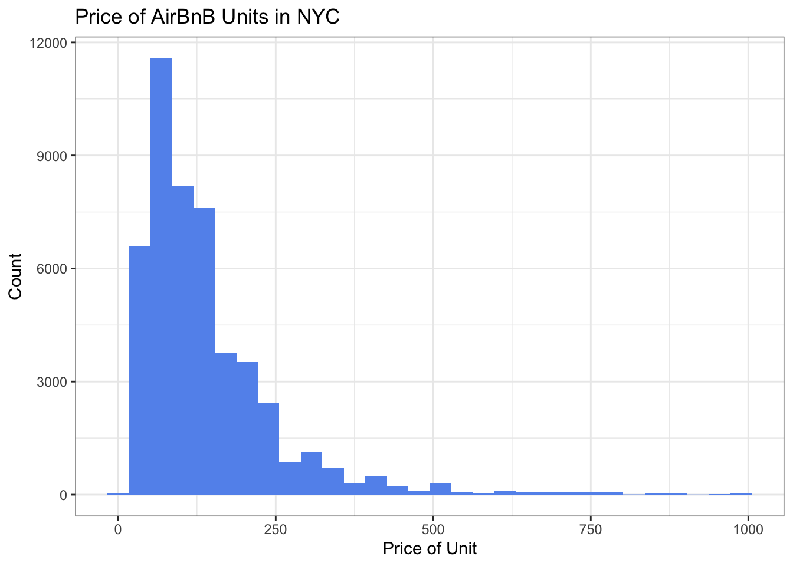
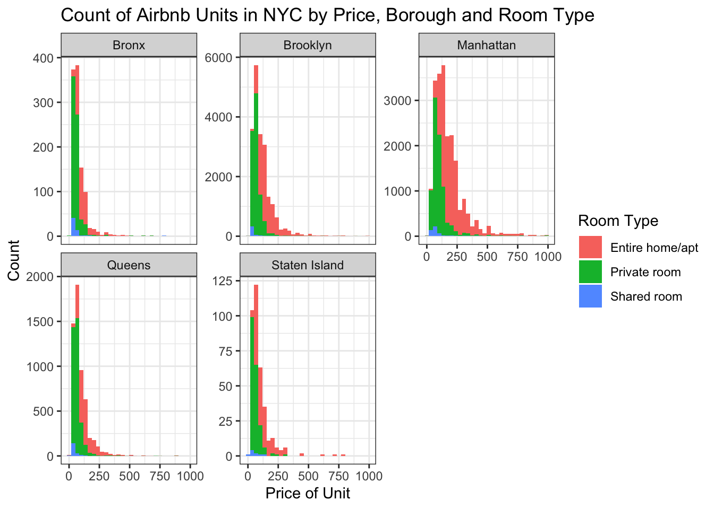
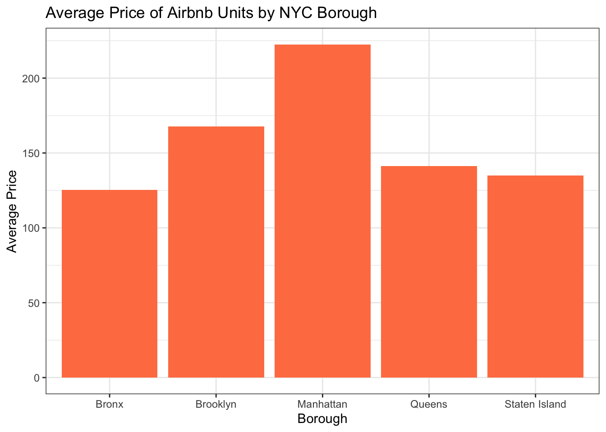
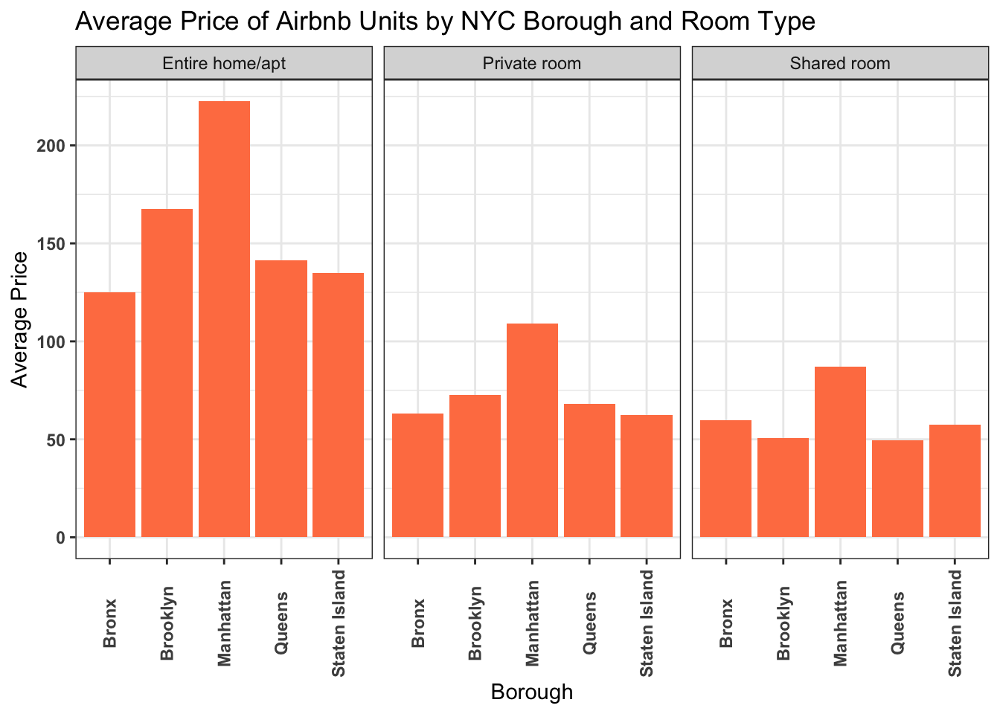
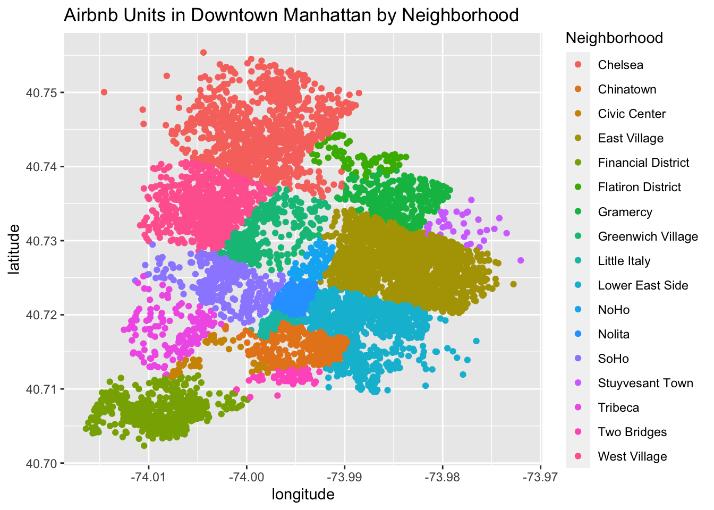
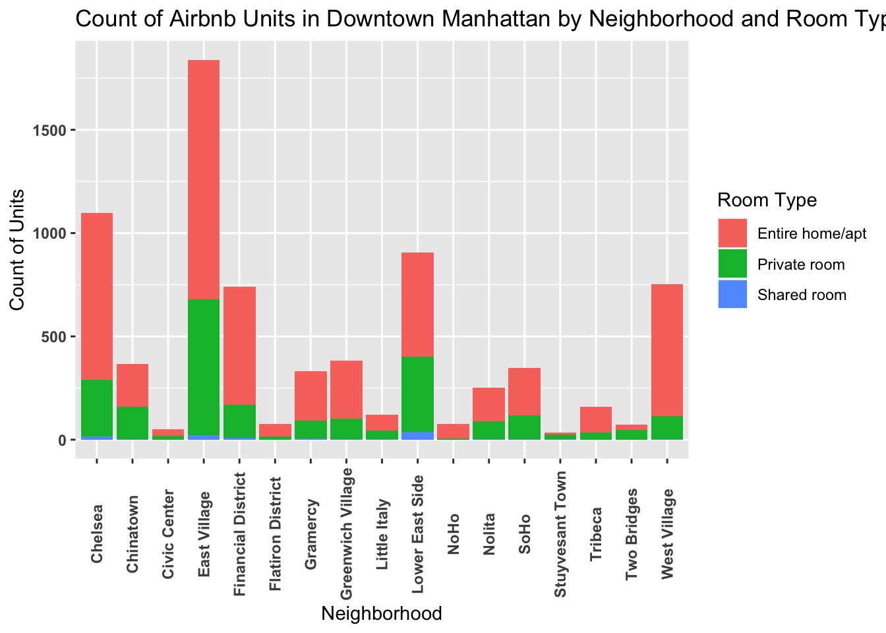
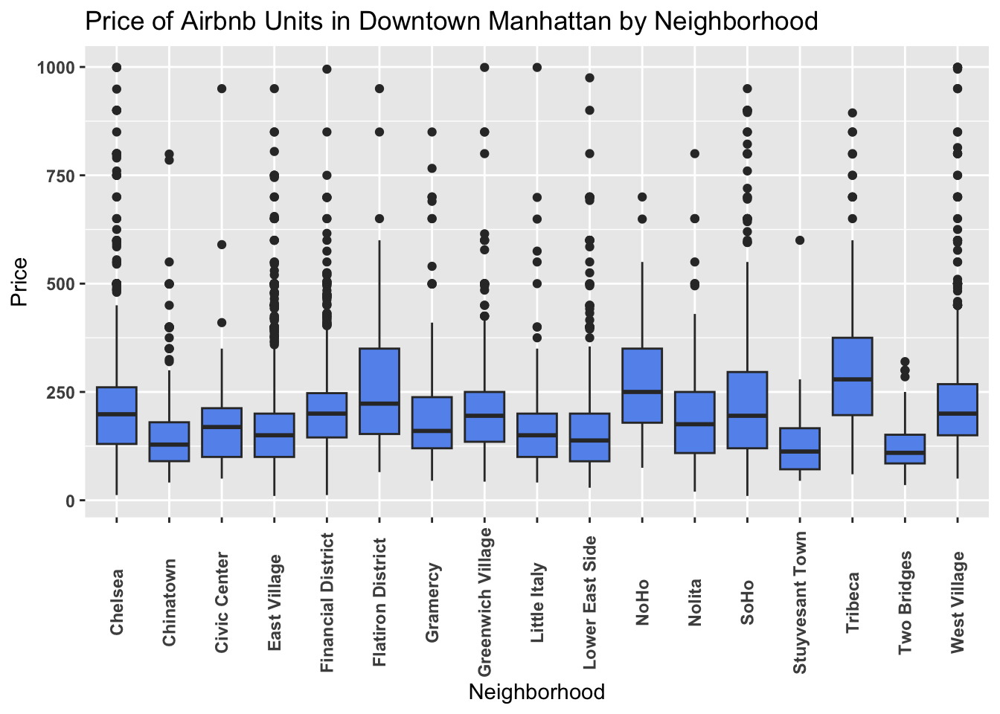

library(tidyverse)
library(ggplot2)
knitr::opts_chunk$set(echo = TRUE, warning=FALSE, message=FALSE)Challenge 7: Airbnb
challenge_7
Justine Shakespeare
air_bnb
Visualizing Multiple Dimensions
Load the Data
Let’s look at the Airbnb data from New York that I used in Challenge #5.
Airbnb_NYC <- read_csv("_data/AB_NYC_2019.csv")
glimpse(Airbnb_NYC)Rows: 48,895
Columns: 16
$ id <dbl> 2539, 2595, 3647, 3831, 5022, 5099, 512…
$ name <chr> "Clean & quiet apt home by the park", "…
$ host_id <dbl> 2787, 2845, 4632, 4869, 7192, 7322, 735…
$ host_name <chr> "John", "Jennifer", "Elisabeth", "LisaR…
$ neighbourhood_group <chr> "Brooklyn", "Manhattan", "Manhattan", "…
$ neighbourhood <chr> "Kensington", "Midtown", "Harlem", "Cli…
$ latitude <dbl> 40.64749, 40.75362, 40.80902, 40.68514,…
$ longitude <dbl> -73.97237, -73.98377, -73.94190, -73.95…
$ room_type <chr> "Private room", "Entire home/apt", "Pri…
$ price <dbl> 149, 225, 150, 89, 80, 200, 60, 79, 79,…
$ minimum_nights <dbl> 1, 1, 3, 1, 10, 3, 45, 2, 2, 1, 5, 2, 4…
$ number_of_reviews <dbl> 9, 45, 0, 270, 9, 74, 49, 430, 118, 160…
$ last_review <date> 2018-10-19, 2019-05-21, NA, 2019-07-05…
$ reviews_per_month <dbl> 0.21, 0.38, NA, 4.64, 0.10, 0.59, 0.40,…
$ calculated_host_listings_count <dbl> 6, 2, 1, 1, 1, 1, 1, 1, 1, 4, 1, 1, 3, …
$ availability_365 <dbl> 365, 355, 365, 194, 0, 129, 0, 220, 0, …Data Description
This data is Airbnb rentals in New York City in 2019, with each observation representing one rental unit. There are almost 49,000 observations and 16 variables. The variables provide information about each unit, including: the id and name of the unit, the hosts (id and name of the host) the location (including neighborhood, city borough, and longitude and latitude), the room type, the price, the number of minimum nights required for a reservation, the number of reviews, date of last review, average reviews per month, something called a “calculated_host_listings_count” (possibly a count of how many listings the host has with Airbnb) and availability (I’m guessing this is how many days of the year the unit is available).
This data looks pretty tidy already. We know from challenges #5 and #6 that we’ll want to remove some of the outliers in the price data. Let’s do that right away and let’s pull up some summary statistics to get a sense of the spread of the price variable after removing the outliers.
ABNYC_filtered <- Airbnb_NYC %>%
filter(price != 0 & price < 1000)
ABNYC_filtered %>%
summarize("lowest" = min(price, na.rm = TRUE),
"25th quantile" = quantile(price, probs = .25),
"median" = median(price, na.rm = TRUE),
"75th quantile" = quantile(price, probs = .75),
"99 quantile" = quantile(price, .99),
"highest" = max(price, na.rm = TRUE))# A tibble: 1 × 6
lowest `25th quantile` median `75th quantile` `99 quantile` highest
<dbl> <dbl> <dbl> <dbl> <dbl> <dbl>
1 10 69 105 175 600 999Visualization with Multiple Dimensions
First graph
Let’s take one of the graphs that I created for challenge 5 that looked at the distribution of price across all of the Airbnb units in New York City.
ggplot(ABNYC_filtered, aes(x = price)) + geom_histogram(fill = "cornflowerblue") +
labs(title = "Price of AirBnB Units in NYC", x = "Price of Unit", y = "Count") +
theme_bw()
For this challenge I will take this graph and add several dimensions. First we’ll break down the data by borough, using the facet_wrap() function, and then we’ll use the fill argument to color in the bars according to room type.
ABNYC_filtered %>%
ggplot(aes(x = price, fill = room_type)) + geom_histogram() +
labs(title = "Count of Airbnb Units in NYC by Price, Borough and Room Type",
x = "Price of Unit", y = "Count", fill = "Room Type") +
facet_wrap(vars(neighbourhood_group), scales = "free_y") +
theme_bw() 
Note that I chose to make the y axis free using the scale argument within the facet_wrap() function, so the y axis for each graph is very different. It is important to note that the difference in number of units per borough is obscured by this visualization since a reader may not initially notice the different y axes.
This new graph provides information about the price distribution of Airbnb units in each NYC borough, as well as the breakdown of the room type. It also provides information about the number of Airbnb units per borough, although the viewer must be careful to read the y axis closely to understand that Brooklyn and Manhattan have the most units.
Second graph
Now let’s take another graph I made in Challenge #5 showing the average price of Airbnb units by NYC Borough.
ABNYC_filtered %>%
filter(room_type == "Entire home/apt") %>%
group_by(neighbourhood_group) %>%
summarise(mean = mean(price)) %>%
ggplot(aes(neighbourhood_group,mean,)) +
geom_col(fill = "coral") +
labs(title = "Average Price of Airbnb Units by NYC Borough",
x = "Borough", y = "Average Price") +
theme_bw()
Let’s further disaggregate by room type using the facet_wrap() function.
ABNYC_filtered %>%
group_by(neighbourhood_group, room_type, ) %>%
summarise(mean = mean(price)) %>%
ggplot(aes(neighbourhood_group,mean,)) +
geom_col(fill = "coral") +
labs(title = "Average Price of Airbnb Units by NYC Borough and Room Type",
x = "Borough", y = "Average Price") +
theme_bw() +
facet_wrap(vars(room_type)) +
theme(axis.text.x = element_text(face = "bold", angle = 90, vjust = 0.5),
axis.text.y = element_text(face = "bold"))
This graphs allows us to see that units that are the entire home/apartment cost more than private or shared rooms, but that in all cases Manhattan is the most expensive borough to rent an Airbnb.
More Visualizations
Since I’ve used this dataset for two challenges already, I’d like to use a subset of the data for the next few visualizations. I’m going to focus on just downtown Manhattan. First we’ll take a look at a scatterplot map of all of the listing in the neighborhoods we’re interested in.
DowntownManhat <- ABNYC_filtered %>%
filter(neighbourhood == "Chelsea" | neighbourhood == "Chinatown" |
neighbourhood == "East Village" | neighbourhood == "Financial District" |
neighbourhood == "Flatiron District" | neighbourhood == "Greenwich Village"|
neighbourhood == "Little Italy" | neighbourhood == "Lower East Side" |
neighbourhood == "NoHo" | neighbourhood == "Nolita" | neighbourhood == "SoHo" |
neighbourhood == "Civic Center"| neighbourhood == "Stuyvesant Town" |
neighbourhood == "Tribeca" | neighbourhood == "Two Bridges" |
neighbourhood == "West Village" | neighbourhood == "Gramercy")
DowntownManhat %>%
ggplot(aes(longitude, latitude, color = neighbourhood),
group = neighbourhood) + geom_point() +
labs(title = "Airbnb Units in Downtown Manhattan by Neighborhood", color = "Neighborhood")
This scatterplot shows a rough shape of downtown Manhattan, with each dot representing an Airbnb rental unit.
Next we’ll make a histogram that plots the number of units in each neighborhood, with a breakdown of room type distinguished by a fill color.
DowntownManhat %>%
ggplot(aes(x=neighbourhood, fill = room_type)) + geom_histogram(stat="count") +
theme(axis.text.x = element_text(face = "bold", angle = 90, vjust = 0.5),
axis.text.y = element_text(face = "bold")) +
labs(title = "Count of Airbnb Units in Downtown Manhattan by Neighborhood and Room Type",
x = "Neighborhood", y = "Count of Units", fill = "Room Type")
This shows that the most units are in the East Village, Chelsea, and the Lower East Side. Most units are an entire home/apartment.
Next, let’s compare the price of units in each neighborhood with geom_boxplot().
DowntownManhat %>%
ggplot(aes(x=neighbourhood, y = price)) + geom_boxplot(fill = "cornflowerblue") +
theme(axis.text.x = element_text(face = "bold", angle = 90, vjust = 0.5),
axis.text.y = element_text(face = "bold")) +
labs(title = "Price of Airbnb Units in Downtown Manhattan by Neighborhood",
x = "Neighborhood", y = "Price")
Here we can see that the median price is highest for units in Tribeca, Noho, and the Flatiron District, although none of these three have the highest maximum price (although of course we removed the outliers above $1,000, so it’s possible there are more units in those neighborhoods that are over $1,000). The most affordable Airbnb units, at least going by their median prices, look to be in the neighborhoods Two Bridges, Stuyvesant Town, and Chinatown.